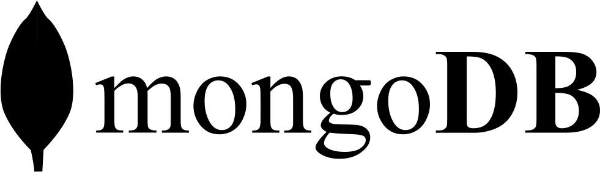
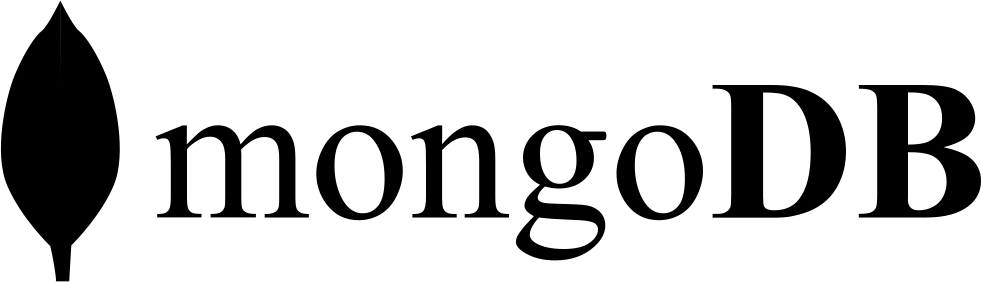
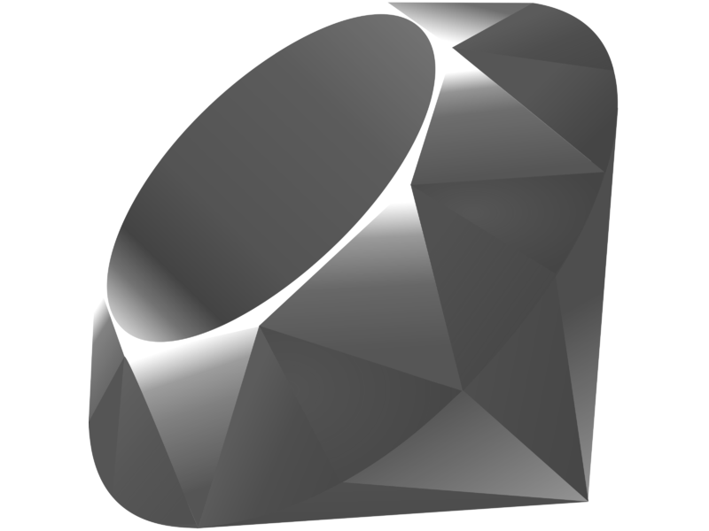
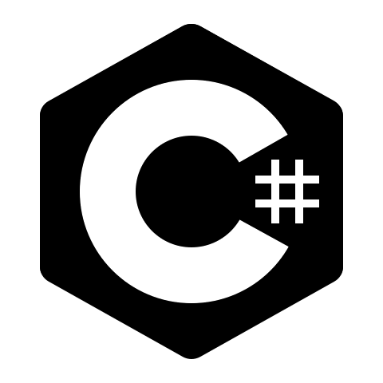
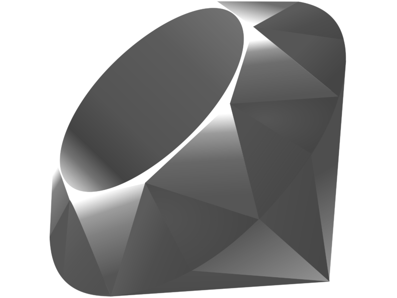
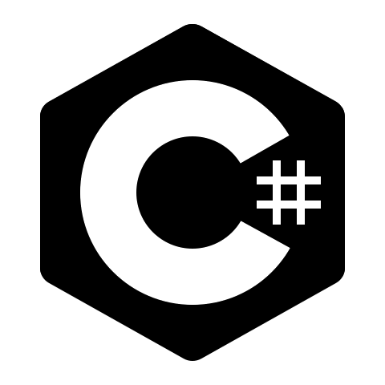

Connections
You can find me here

Projects
I like to make things
Skills
Technologies I currently use
 

 



Me
A little bit more about me
Background & Current Situation
I am originally from England and I currently live in Beijing China. I have been in China for the last 8 years working as an English teacher. I have picked up a fair amount of Chinese, my family is here and I am looking to make a permanent switch to a full-time web development position.
I'm learning all the time
Throughout the last few years I have used my free time to study. I have spent time studying Harvard's CS50 course, The Odin Project, the basics of HTML, CSS, and Javascript, as well as some time on Angular Python Ruby and C#. While there have been (perhaps) wide-ranging subjects, they have all helped me to develop a certain kind of thinking that has improved my problem solving and problem identification skills. As I come across more problems I find new and better ways to solve them.
I am always finding new things to improve on and learn more about. I am still learning a lot about Angular (as well as looking more into React and Vue), and also learning about the shadow DOM and different ways to do things without using a framework or so many libraries - this page for example uses HTML CSS and JS utilising web components. I am always trying to bolster my knowledge about web foundations such as HTTP, DNS, TCP/IP.
Looking forward
I'm looking for opportunities where I can show what I have learned, and have a chance to learn and develop a lot more.